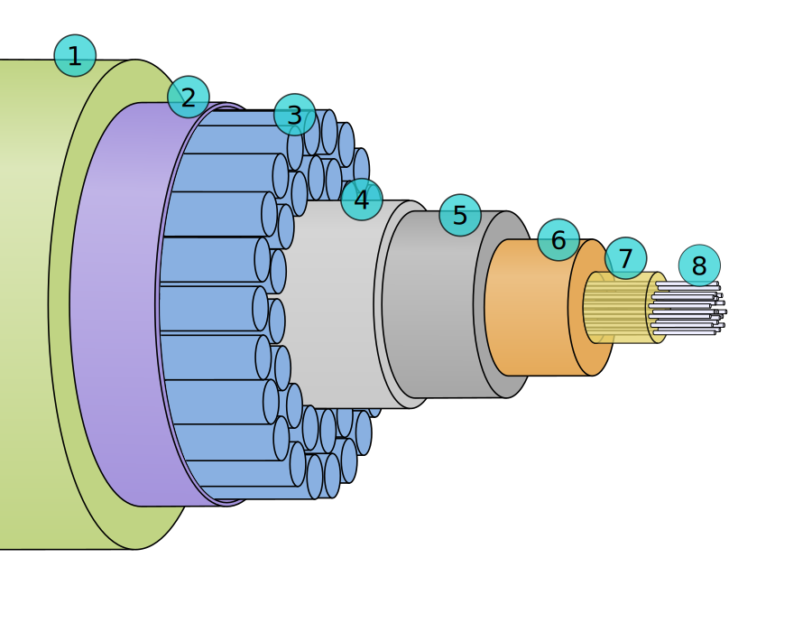

A submarine communications cable is a cable laid on the sea bed between land-based stations to carry telecommunication signals across stretches of ocean. The first submarine communications cables—laid in the 1850s—carried telegraphy traffic. Subsequent generations of cables carried telephone traffic, then data communications traffic. Modern cables use optical fiber technology to carry digital data, which includes telephone, Internet, and private data traffic. Modern cables are typically about 25 millimeters (0.98 in) in diameter and weigh around 1.4 kilograms per meter (0.4 lb/ft) for the deep-sea sections, which comprise the majority of the run. Larger and heavier cables are used for shallow-water sections near shore. As of 2010, submarine cables link all the world’s continents except Antarctica.
A cross section of the shore-end of a modern submarine communications cable.
- Polyethylene
- Mylar tape
- Stranded steel wires
- Aluminium water barrier
- Bolycarbonate
- Copper or aluminium tube
- Petroleum jelly
- Optical fibers